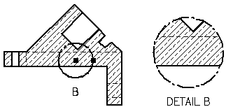
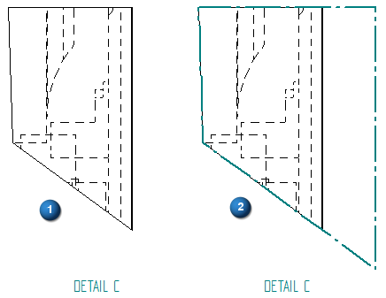
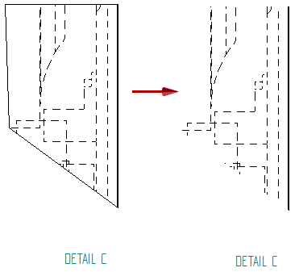

Modifying detail views
To modify a dependent or independent detail view, use the Select command and the options on the Drawing View Selection command bar.
-
You can change drawing view scale, show and hide caption text, or choose a shaded or hidden line display.

-
You also can select the Properties button to open the Drawing View Properties dialog box. The tabs that are available contain properties that you can change, which vary with the type of detail view.
Controlling the detail view border
You can control the display of the border of the detail view after you place it. Select the detail view border, and then select the Properties button on the command bar. Use the Show drawing view border option on the General tab in the Drawing View Properties dialog box.
In (1), the detail view border is turned off. Only the geometry enclosed by the detail envelope is shown.
In (2), the detail view border is turned on. The entire area enclosed by the detail envelope is included.

Displaying cropping edges
You can use the Show boundary edges option on the Annotation page of the Detail View Properties dialog box to specify whether edges are displayed where the detail view boundary intersects the model.

Modifying dependent versus independent detail views
Once created, both dependent and independent detail views can be modified with different results. Dependent detail views are associative to the source view. When you make changes to the geometry in the dependent detail view, the source view changes. Independent detail views do not reference the source view, nor are changes made in the independent view reflected in the source view. Independent detail views can be used to show or hide parts, display hidden lines, add shading, or draw in the view without affecting the source view geometry or view properties.